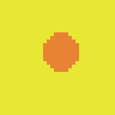
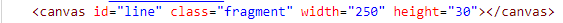
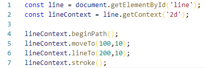
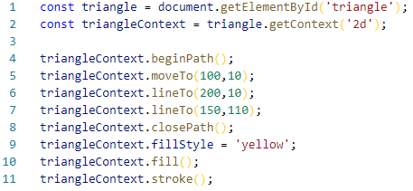
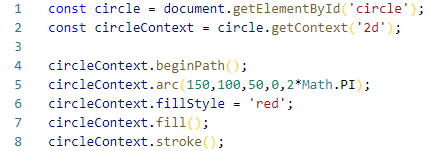

IntroductionWhat is canvas?What can I create with canvas?Piskel App
What are advantages and disadvantages of using canvas?
Advantages:
-many dynamic elements
-element of html
Disadvantages:
-clearRect()
-size
A bit coding
Line


Triangle

Circle

PreloaderWhere can I find information to learn canvas?MDNThe End